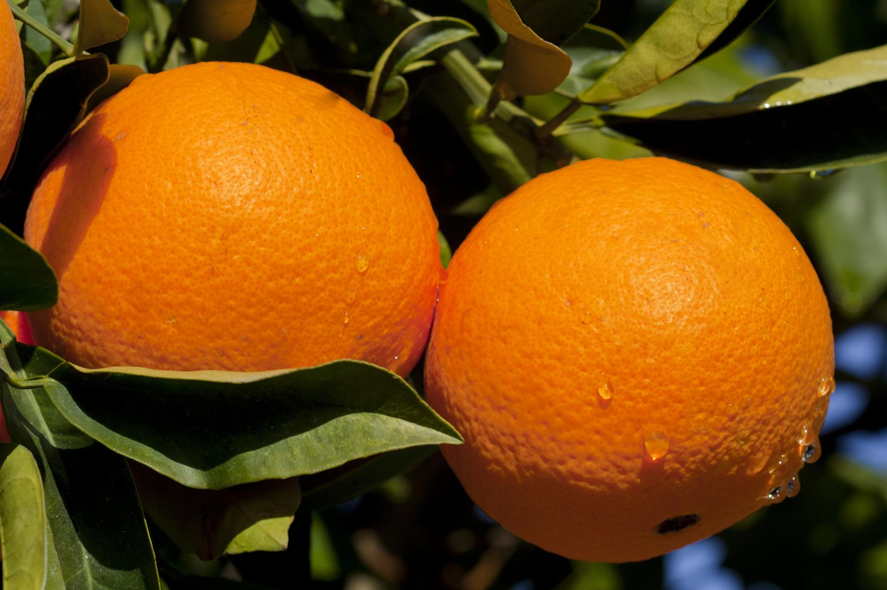
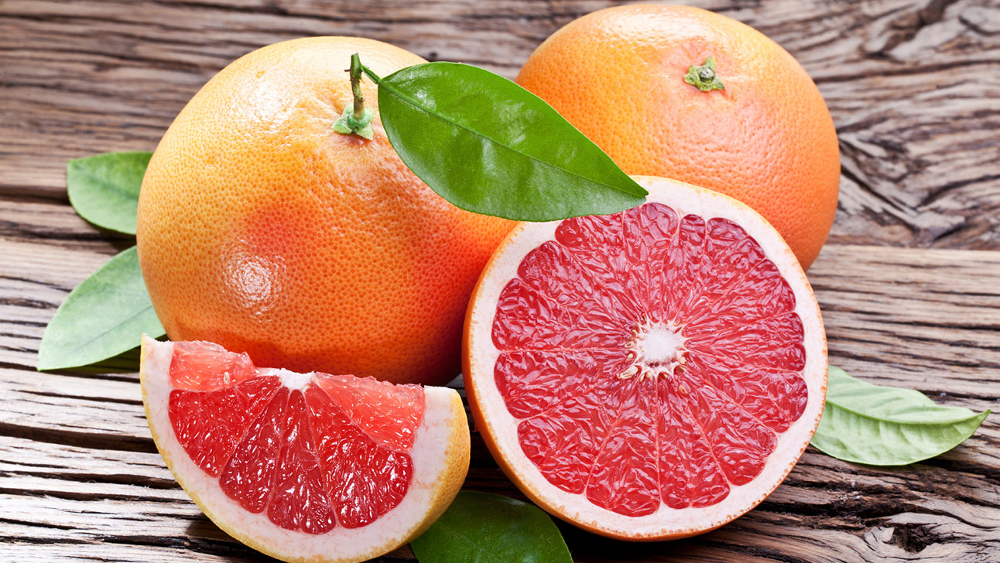
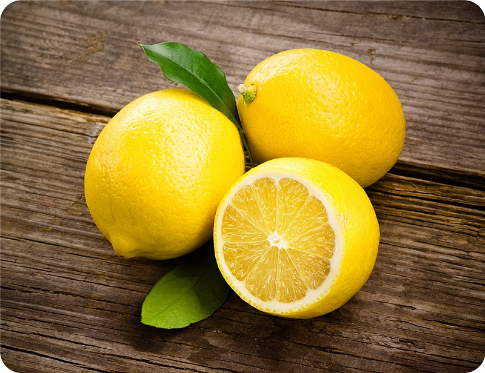
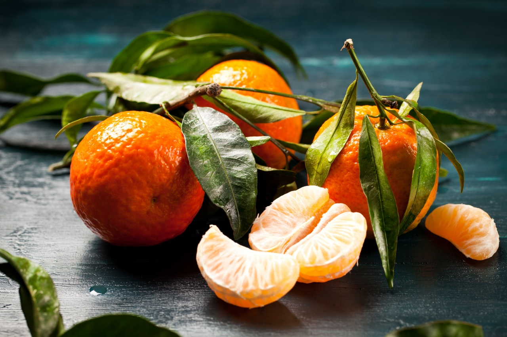

Цитрусовые (лат. Citrinae) — подтриба цветковых древесных растений семейства Рутовые (Rutaceae), входит в трибу Aurantieae подсемейства Померанцевые (Aurantioideae).

Самый известный представитель этой группы — род цитрус (Citrus), ряд видов которого (апельсин, грейпфрут, лимон, мандарин и некоторые другие).
Апельсин

- Овале Калабрезе
- Гамлин
- Верна
- Веленсия
- Парсон Браун
- Салустиана
- Хамлин
Грейпфрут

- Дункан
- Марш
- Красный грейпфрут
- Рубин красный грейпфрут
- Белый грейпфрут
- Пламя грейпфрут
- Оробланко
Лимон

- Павловский
- Мейер
- Новогрузинский
- Курский
- Джойса
- Лисбон
- Уральский комнатный
- Эврика
Мандарин

- Мед
- Робинсон
- Храм
- Дэнси
- Клементина
- Сочинский 23
- Пионер 80